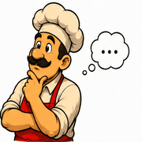
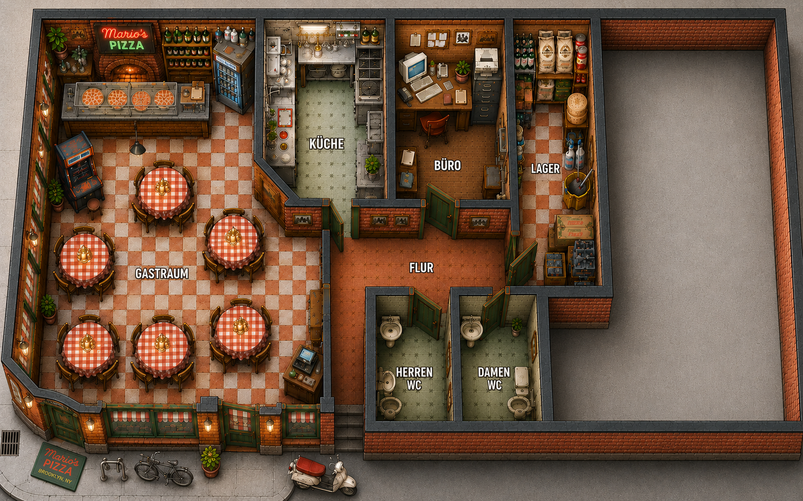
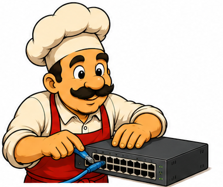
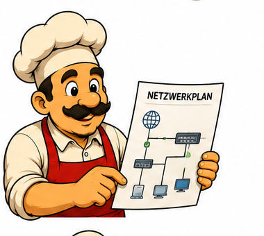
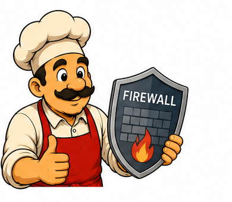
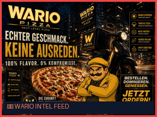
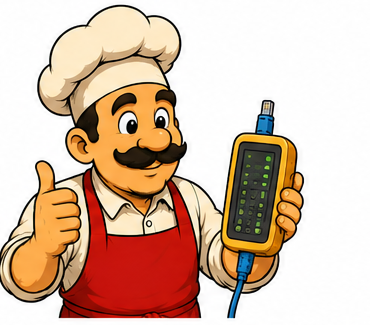

| Gerät / Interface | Subnetz / IP | Beschreibung |
|---|---|---|
| R-Brooklyn Gi0/0 | 195.10.10.2/30 |
WAN-Uplink zu Wario Internet |
| R-Brooklyn Gi0/1.10 | 192.168.1.1/24 |
Gateway Kassennetz (VLAN 10) |
| R-Brooklyn Gi0/1.20 | 192.168.2.1/24 |
Gateway Büro / Management (VLAN 20) |
| SW-Brooklyn Gi0/1 | Access VLAN 10 | Port für Mario Kasse (Gastraum) |
| SW-Brooklyn Gi0/2 | Access VLAN 20 | Port für Mario Büro PC |
| SW-Brooklyn Gi0/0 | 802.1Q Trunk | Uplink zu R-Brooklyn Gi0/1 |
| Kasse-Mario (eth0) | 192.168.1.50/24 |
Kassenterminal (POS) |
| R-Wario Loopback0 | 198.51.100.1/24 |
Wario Webserver & Attack Host |

🎯 Mission 1: Switch-Konfiguration & VLANs (LF 3)Kopiere diese Befehle in die Konsole von SW-Brooklyn:

🌐 Mission 2: Router-on-a-Stick (LF 3)encapsulation dot1Q <vlan-id>) angegeben wird, bevor eine IP-Adresse konfiguriert werden kann.

🛡️ Mission 3: Die Anti-Wario Firewall (Security / LF 9)
198.51.100.0/24 an. Marios Kassenterminal muss vor Spoofing und DoS geschützt werden!

🔍 Mission 4: Wireshark Live-Paketanalyse (CML Feature)